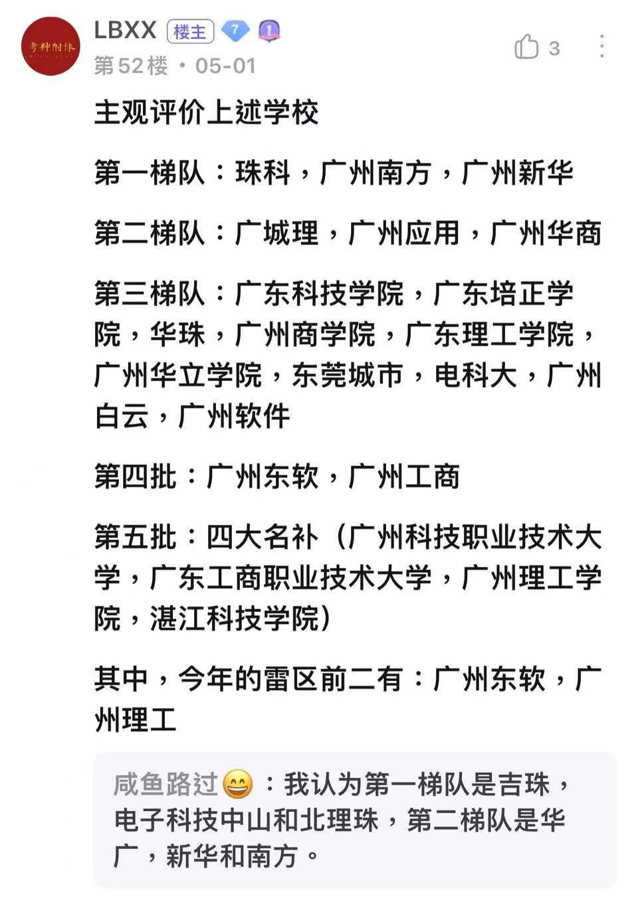
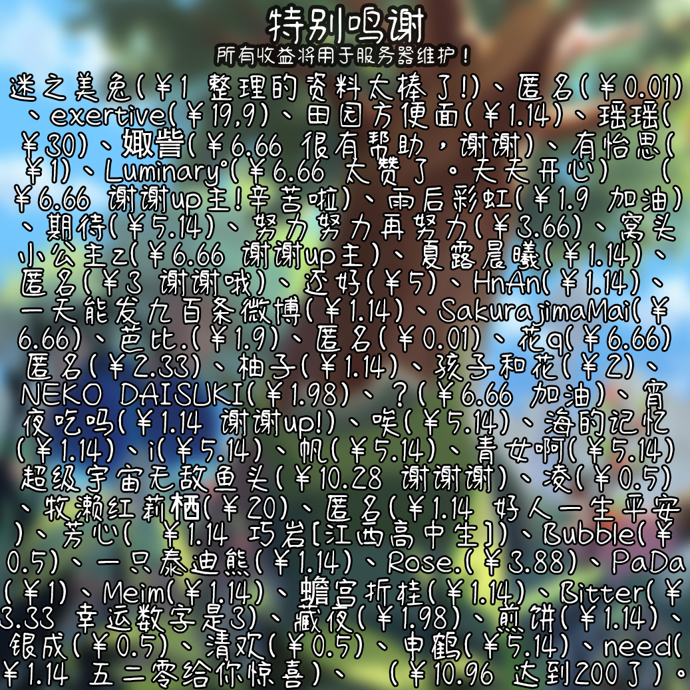

以下内容是写给想上本科的同学的
⠀⠀⠀接上文，那这时候有人可能就会想说：“理(文)综怎么办呢？”
⠀⠀⠀说点比较打击人的话，你都点进来这个网页了，要么考不上本科要么最多只能过线一点。如果最多只能过线一点，我负责任的告诉你可以放弃理(文)综了，因为读民办本科4年很费钱，学费住宿费加各种开销要20万起步。但是放弃理综并不等于放弃上本科，你要知道还有专升本这个东西！
想上本科怎么办？
如果只是为了过二本线，千万不要复读！！！
*首先声明一点，我这里说的专升本指的就是普通专升本（在广东也叫专插本），即普通高等教育专科升本科招生考试，不是自考专升本，不要搞混了！普通专升本拿的是全日制第一学历，而自考不是第一学历。
⠀⠀⠀点进来的人，你们复读了1年，也不一定能上本科，就算上了也是民办本科，5年下来都要几十万了。所以我告诉你们一个捷径：来广东专升本。
⠀⠀⠀为什么要来广东专升本？广东学校非常多，专升本民办本科每年都招不满人，所以只要过最低线就能上，广东省专升本满分500分，考180分就能上很多民办本科，比如21年软件工程专业各学校的分数线：
2021年广东专升本考试普通批投档线⠀⠀⠀可以看出，上公办本科难，但是上民办本科很容易，180分的学校很多人裸考都上了！所以说如果只是为了过二本线，千万不要去复读！！！
总结：对升本有想法，家里也能出钱，可以考虑报广东的专科！
⠀⠀⠀为什么在广东省考民办二本容易？
1. 广东人和江西人的思想不一样，广东人认为民办二本不咋样；而江西人认为只要能上本科就是好的。详情可以去问当地人。
2. 广东学校太多了，招生计划多，导致分数线低。
⠀⠀⠀这个是UP主打算以后保底的院校，在江西省高考居然要470多分才能上
该图来自广东专插本吧↑
⠀⠀⠀就说到这里，对专升本感兴趣的同学以后可以去多了解一下。
求大佬投喂！
服务器维护一年300多RMB，实在是不易...
微信：AmanoRenard
QQ：1320128045
本网站无域名，容易被微信、QQ等社交软件拦截，建议使用浏览器访问。
CopyRight©2022 AmanoRenard All Rights Reserved